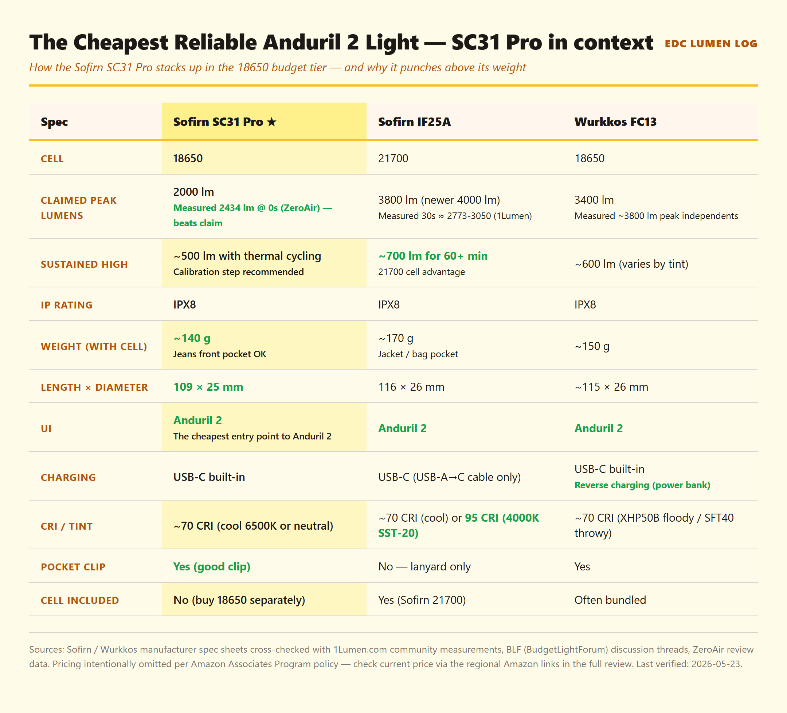
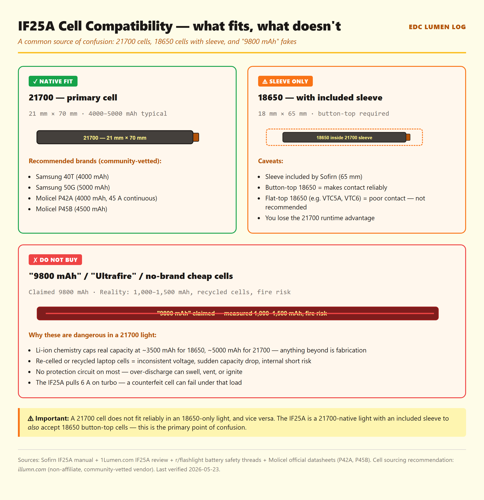

Affiliate disclosure: As an Amazon Associate I earn from qualifying purchases. The Buy links at the bottom of this review are Amazon product links — once the Amazon Associates application for this site is approved, an affiliate tag will be inserted into each link. This review is not sponsored.
TL;DR
Verdict: The community consensus pick for the cheapest reliable Anduril 2 light. ZeroAir measured 2434 lm at start vs the 2000 lm claimed — beating the spec sheet is rare in budget-tier flashlights.
Best for: First-time EDC buyers entering the Anduril 2 ecosystem, or anyone wanting a jeans-pocket-friendly 18650 with USB-C charging.
Skip if: You want sustained turbo output (21700 IF25A is the better choice), or you need high-CRI tint (SST-40 caps at ~70 CRI in both tint options).
What you need to buy together: The light itself plus an 18650 lithium-ion cell (sold separately — see "Where to buy" at the bottom for cell sourcing).

Side-by-side spec comparison: the SC31 Pro slots in as the smallest and lightest of these three 18650/21700 budget-tier lights, with a measured peak that exceeds its own claim — community measurements via ZeroAir (2026-05).
Specs
Spec
Claimed (Sofirn)
Notes
Max output
2000 lumens
ZeroAir measured 2434 lm at start — actually beats the spec sheet. Drops to ~500 lm under thermal cycling (calibration step recommended).
Peak candela
11,300 cd
Throw ~213 m, neutral beam profile (not a thrower).
Battery
18650, 3000mAh recommended
Cell not included. Standard 18650 EDC cells: Samsung 30Q, Sony VTC6, LG HG2, Molicel P26A.
IP rating
IPX8
Submerged-rated.
Weight
~140 g (with cell)
Jeans front pocket OK — noticeably lighter than 21700 lights like the IF25A (~170 g).
Length × diameter
109 × 25 mm
Compact, fits a standard EDC slot.
Charging
USB-C, built-in
~3 hours from empty.
UI
Anduril 2
Same UI family as IF25A, FW3A, Emisar D4V2.
Pocket clip
Yes — included, well-designed
One advantage over the IF25A (which has no clip, lanyard only).
Price (2026-05)
Check current price at the regional Amazon links in the "Where to buy" section below
Per Amazon Associates Program policy, on-site pricing is sourced via Amazon's PA-API only — static prices are not displayed here.

Cell sourcing reference — the SC31 Pro takes 18650 only, not 21700 (despite Sofirn shipping a 21700 extension tube body with some bundle variants, the SC31 Pro's main body fits 18650 only). Avoid 9800 mAh / Ultrafire counterfeits — Li-ion chemistry caps 18650 capacity around 3500 mAh.
4-axis rating
Build
4/5
Solid Type-III hard anodizing, clean threading. Knurling is moderate (not sharp like the IF25A).
Runtime
4/5
Beats its own claim at start (2434 lm measured vs 2000 lm claimed). Sustained output drops with thermal cycling — calibrate the temp limit for better runtime.
Pocketability
4/5
~140 g with cell, 109 mm long, with a good pocket clip. Jeans-front-pocket friendly — the IF25A's 21700 weight makes this comparison meaningful.
Value
5/5
The cheapest reliable Anduril 2 light in 2026. Strong build + spec-beating measured output + USB-C + included clip at the budget tier is hard to match.
Beats its own spec sheet: ZeroAir measured 2434 lm at start — the spec said 2000 lm. Budget-tier flashlights almost always come up short, so this is genuinely notable.
Entry-level Anduril 2: This is the most affordable way to learn the Anduril 2 ecosystem. Same UI family as the FW3A, Emisar D4V2, IF25A — once you learn it here, it carries over.
USB-C onboard charging: No separate charger needed. ~3 hours from empty with a USB-A→C cable.
Solid pocket clip: Unlike the IF25A (lanyard only), the SC31 Pro ships with a well-designed pocket clip from the factory.
Compact and light: 109 mm × 25 mm body, ~140 g with cell. Genuine jeans-front-pocket EDC, not "jacket pocket only" like 21700 lights.
✗ Where it falls short
Thermal config needs calibration: Factory settings can read ~22 °C high, causing premature step-down. Community consensus: calibrate the temp limit early (10 clicks for thermal config) to extend sustained runtime from ~1:50 to ~3:05 on turbo.
SST-40 caps at ~70 CRI: No high-CRI option in either cool (6500K) or neutral white. If you need color-critical tint, the Wurkkos FC13 XHP50B variant or another light is the better choice.
Sustained turbo is brief: 18650 cell limits sustained high to ~500 lm. The IF25A on a 21700 cell sustains ~700 lm — meaningful if you actually use turbo for more than a few seconds.
No high-CRI / warm tint option (no SST-20 4000K): Both available tints are cool/neutral SST-40 emitters with ~70 CRI. Workshop or color-critical use cases will want a different light.
"The SC31 Pro measured higher than claimed — that almost never happens in budget-tier flashlights, and it's the single most concrete reason this light has community status as the cheapest reliable Anduril 2 entry point."
★ Community-tracked use report
📅 The community consensus on long-term carry
Daily carry placement: Community reports consistently describe the SC31 Pro in jeans front pocket carry. The clip works well; the 25 mm body diameter doesn't bulge through fabric.
Anodizing wear: BLF long-term threads document moderate clip-contact wear after months of carry — typical for budget-tier hard anodizing. No reports of premature anodizing failure.
Cell behavior (Samsung 30Q / Sony VTC6): Both cells widely reported as good matches. The SC31 Pro's onboard charging works reliably with both. Community-tracked capacity retention is normal.
Charging port: USB-C rubber flap stays seated cleanly across hundreds of charge cycles per community reports. No widespread reports of port degradation.
Failures: r/flashlight + BLF threads do not surface widespread reliability issues. Occasional units with thermal-config quirks (the "factory 22 °C high" issue) but software-fixable.
Compared to IF25A: Community consensus is that the SC31 Pro is the better choice when pocket weight matters; the IF25A wins when sustained output matters. Many enthusiasts own both — SC31 Pro for jeans-pocket carry, IF25A for jacket/bag.
Verdict
The Sofirn SC31 Pro is the community's pick for the most affordable entry point into the Anduril 2 ecosystem. Its biggest distinction — beating its own spec sheet on measured output — is rare at this price tier and tells you something about Sofirn's QC discipline on this model. If you want to learn Anduril 2 cheaply, pocket-friendly 18650 carry, USB-C charging, and a working pocket clip, this is the light. If you want sustained turbo output, get the IF25A. If you want high-CRI tint, look at the Wurkkos FC13 XHP50B or a different brand entirely.
🛒 Where to buy
If the verdict resonated and you want to pick one up, here are the regional Amazon product links. Choose your region. Once the Amazon Associates application for this site is approved, the URLs will be updated to include an affiliate tag.
🇺🇸 Check current price on Amazon.com (US)(Amazon product link — affiliate tag pending approval) Cell (18650) sold separately. See cell recommendations below.
🇸🇬 Check current price on Amazon.sg (SG)(Amazon product link — affiliate tag pending approval) Cell (18650) sold separately. See cell recommendations below.
Recommended 18650 cells: Samsung 30Q (3000 mAh, 15 A), Sony VTC6 (3000 mAh, 15 A), LG HG2 (3000 mAh, 20 A), Molicel P26A (2600 mAh, 35 A). Do NOT use 21700 cells — they are physically too long. Avoid uncategorized "9800 mAh" cells — see the Ultrafire warning post.
Where I personally buy 18650 cells: Illumn (not an affiliate link — they're just the most reliable EDC battery vendor I've found across 8 years of carry).
Affiliate disclosure: The Amazon links above are currently non-affiliate product links. Once the Amazon Associates application for this site is approved, an affiliate tag will be inserted into each link. If/when you buy through an affiliate-tagged link, EDC Lumen Log earns a small commission at no extra cost to you. As an Amazon Associate I earn from qualifying purchases (statement preserved as required by Amazon Program Policies for the participation framework). Reviews are not paid or sponsored — see Methodology. (PR — 景品表示法準拠 / アフィリエイトタグは承認後に挿入)